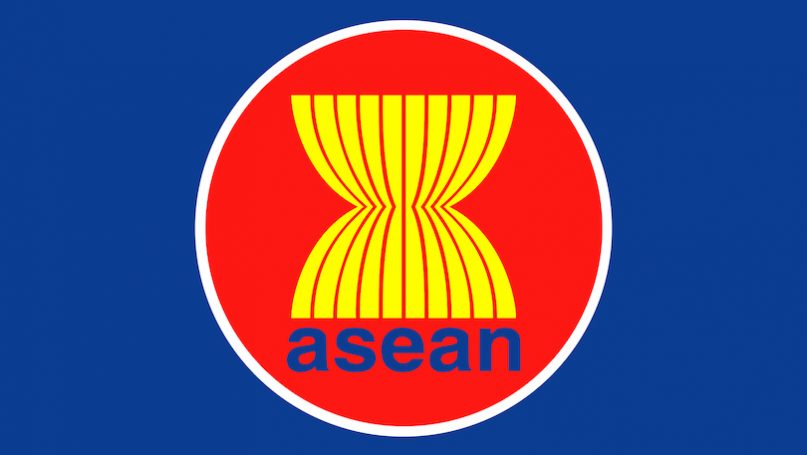

Fokus Utama
Kerja sama ekonomi Indonesia – Laos dan kaitannya dengan SDGs 8: Pekerjaan Layak dan Pertumbuhan Ekonomi.
.png)
.png)
Website ini dibuat untuk menganalisis kerja sama Indonesia – Laos di bidang ekonomi dan bagaimana kerja sama tersebut mendukung SDGs 8: Pekerjaan Layak dan Pertumbuhan Ekonomi.
SDGs (Sustainable Development Goals) adalah 17 tujuan global yang disepakati negara-negara di dunia, termasuk Indonesia, untuk dicapai sampai tahun 2030. Tujuan-tujuan ini mencakup berbagai bidang, misalnya:
Melalui web ini, kamu diajak untuk memahami kondisi Indonesia saat ini, tantangan yang dihadapi, serta aksi nyata yang bisa dilakukan sejak dari sekolah!
.png)
Ilustrasi posisi Indonesia & Laos di Asia Tenggara.
Kerja sama ekonomi Indonesia – Laos dan kaitannya dengan SDGs 8: Pekerjaan Layak dan Pertumbuhan Ekonomi.
Menyajikan analisis kritis, solusi kreatif, dan contoh aksi SDGs di kehidupan sehari-hari.
Mewujudkan sikap pelayanan, kepedulian, dan tanggung jawab terhadap sesama dan bumi.
Setiap orang punya peran dalam mewujudkan SDGs. Mulai dari mendukung UMKM lokal, belajar dengan sungguh-sungguh, hingga ikut kegiatan sosial di sekolah dan lingkungan. Yuk, jadikan pengetahuan di website ini sebagai langkah awal untuk bertindak!
| Sila | Nilai | Kaitan dengan Kerja Sama Indonesia–Laos | Contoh Nyata (SDGs 8) |
|---|---|---|---|
| 1 | Ketuhanan Yang Maha Esa | Memperhatikan etika, moral, dan nilai spiritual dalam program kerja sama dengan Laos. | Proyek pendidikan & pelatihan yang menghormati budaya dan keyakinan lokal di Laos. |
| 2 | Kemanusiaan yang Adil dan Beradab | Memberikan bantuan, pelatihan, dan peluang kerja layak untuk masyarakat Laos. | Program beasiswa, pelatihan keterampilan, dan penciptaan lapangan kerja. |
| 3 | Persatuan Indonesia | Menguatkan identitas bangsa Indonesia saat berinteraksi di forum internasional dan ASEAN. | Pertukaran pelajar dan diplomat membawa nilai kebangsaan Indonesia di Laos. |
| 4 | Kerakyatan yang Dipimpin oleh Hikmat Kebijaksanaan | Pengambilan keputusan dilakukan melalui musyawarah dan kesepakatan bersama antara kedua negara. | Negosiasi proyek energi terbarukan atau pendidikan melalui konsultasi bilateral dan forum ASEAN. |
| 5 | Keadilan Sosial bagi Seluruh Rakyat Indonesia | Mendorong pertumbuhan ekonomi inklusif dan peluang usaha yang adil. | Pemberdayaan ekonomi lokal, akses pelatihan bagi masyarakat miskin, perdagangan yang adil. |
Tabel ini menunjukkan bagaimana setiap sila Pancasila dapat dijadikan pedoman dalam kerja sama internasional, sehingga program SDGs 8 tidak hanya meningkatkan ekonomi tetapi juga memperkuat nilai moral, sosial, dan budaya.
Bagian ini menganalisis kondisi terkini Indonesia terkait pekerjaan layak dan pertumbuhan ekonomi, tantangan yang dihadapi, potensi yang dimiliki, serta peran masyarakat dalam mendukung SDGs 8.
Indonesia terus berupaya meningkatkan kualitas pekerjaan dan pertumbuhan ekonomi yang inklusif. Beberapa isu yang masih muncul antara lain pengangguran, pekerja informal, dan kesenjangan kualitas kerja.
| Tahun | Indikator | Angka di Indonesia | Catatan |
|---|---|---|---|
| 2022 | Tingkat Pengangguran Terbuka | ± 5,86% | Menurun dibandingkan tahun 2021. |
| 2023 | Persentase Pekerja Informal | ± 59,17% | Banyak pada sektor UMKM dan jasa. |
| 2023 | Pertumbuhan Ekonomi Nasional | ± 5,05% | Stabil & berada di kisaran ideal kawasan ASEAN. |
Sumber: Badan Pusat Statistik (BPS).
Jika akses pelatihan kerja dan informasi pasar semakin ditingkatkan, UMKM dapat tumbuh lebih kuat dan menyerap lebih banyak tenaga kerja. Hal ini akan mendorong pertumbuhan ekonomi berkelanjutan. Namun jika tantangan tidak ditangani, pengangguran dan pekerjaan tidak layak dapat terus meningkat.
Bagian ini berisi ide solusi yang realistis, kreatif, dan kontekstual untuk mendukung SDGs 8 di Indonesia, khususnya dengan menonjolkan karakter Serviam: Peduli & Bertanggung Jawab.
Saya memilih karakter Serviam: Peduli. Artinya, setiap solusi yang dibuat tidak hanya memikirkan diri sendiri, tetapi juga kesejahteraan orang lain, terutama kelompok yang lemah dan membutuhkan pekerjaan layak.

SDGs 8 – Pertumbuhan Ekonomi & Pekerjaan Layak.

Foto kegiatan kunjungan ke UMKM.
Kerja sama internasional membantu Indonesia mencapai tujuan SDGs, termasuk SDGs 8. Berikut beberapa contohnya:
Pengertian: Kerja sama bilateral adalah kerja sama yang dilakukan oleh dua negara saja, misalnya Indonesia dan Laos, dengan kesepakatan yang disusun bersama.
Kaitan dengan SDGs 8: membuka lapangan kerja baru, meningkatkan keterampilan, dan memperkuat pertumbuhan ekonomi kedua negara.
Dalam Gambar: Pertemuan Indonesia-Laos
Pengertian: Kerja sama regional adalah kerja sama yang melibatkan beberapa negara dalam satu kawasan, misalnya negara-negara anggota ASEAN.
Kaitan dengan SDGs 8: meningkatkan mobilitas tenaga kerja, investasi, dan peluang usaha di kawasan.
Dalam Gambar: Logo ASEAN
Pengertian: Kerja sama multilateral adalah kerja sama yang melibatkan banyak negara dan lembaga internasional sekaligus, dengan tujuan global.
Kaitan dengan SDGs 8: dukungan pendanaan, teknologi, dan kebijakan global untuk mempercepat pencapaian tujuan pembangunan berkelanjutan.
Dalam Gambar: Logo PBB

Nama: Maddie
Kelas / No Absen: 95/13
Website ini merupakan tugas kolaborasi IPS – PPKN – TIK.

Maddie 95/13✨
Sumber-sumber berikut digunakan sebagai dasar data dan analisis di website ini